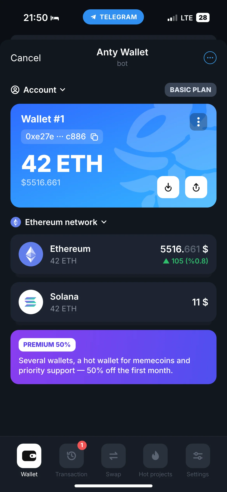
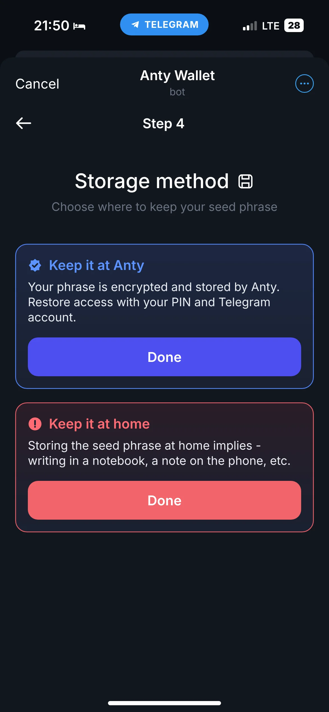
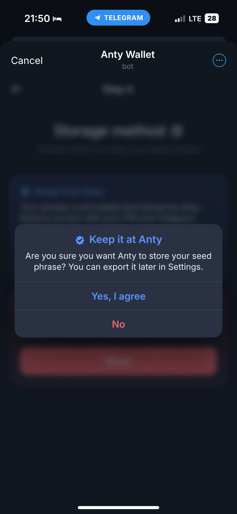
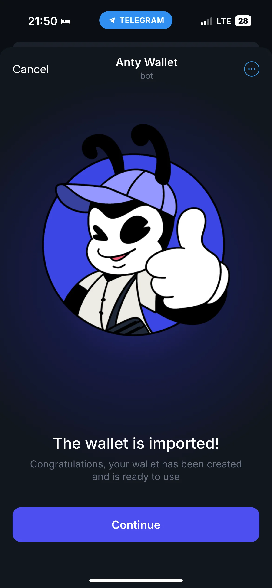
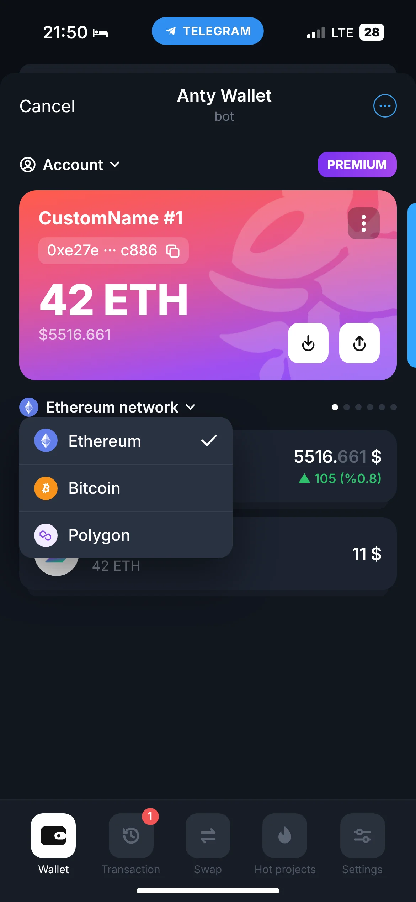
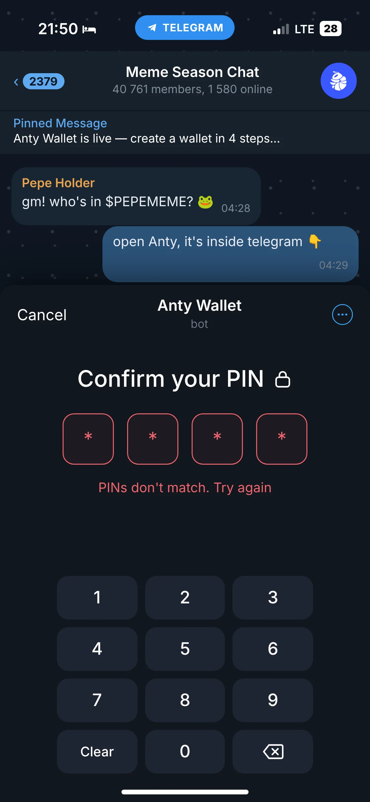

Кошельки как колода карт
У каждого кошелька своя карточка. Горячий кошелёк для мем-токенов оранжевый — его не спутать с основным.



Anty Wallet открывается прямо в чате Telegram. Я спроектировал продукт целиком: от первого экрана до персонажа и стикеров. Кошелёк дошёл до 50 000 пользователей в месяц, а потом его выкупили вместе с моими UX-решениями.




Seed-фраза — главная стена. Все кошельки с самостоятельным хранением, которые я разобрал в Telegram, начинают с 12 или 24 слов и не объясняют, зачем они.
Ошибка стоит денег. Около 20% биткоинов считаются потерянными навсегда. Новичок это чувствует, поэтому бросает на первом шаге или пишет фразу куда попало.
«Keep it at Anty» — фраза хранится зашифрованной, доступ возвращается по PIN и аккаунту Telegram. «Keep it at home» — полный контроль у пользователя. Синий путь рекомендованный, красный подчёркивает ответственность.
Каждый выбор подтверждается коротким диалогом, где риск сказан прямо: «Если потеряете фразу, восстановить кошелёк не сможет никто». Случайный тап больше не решает судьбу денег.

Старт, PIN, фраза, хранение. Четыре шага, и персонаж радуется готовому кошельку. Импорт работает так же: успех или отказ с понятным следующим шагом.

У каждого кошелька своя карточка. Горячий кошелёк для мем-токенов оранжевый — его не спутать с основным.

Не в настройках. Перевод в «не ту» сеть — частая ошибка, теперь сеть всегда на виду.

QR-сканер или вставка из буфера. Кнопка «Send» оживает, только когда форма заполнена.


Mini App открывается на 2/3 экрана поверх чата. Каждый ключевой экран работает в обоих размерах.

Отметка Safety token отличает настоящий токен от случайного двойника.

15 наборов компонентов с 39 вариантами и ещё 26 отдельных компонентов. Тема переключается целиком, без ручной перерисовки экранов. Потяни ползунок.

На развитие нужен был бюджет, которого у проекта не было, и фаундер продал кошелёк. Название покупателя под NDA.
Безопасность — это тоже UX. Когда риск объяснён простыми словами, а выбор остаётся за человеком, он доходит до конца.
Заложил бы аналитику воронки создания кошелька с первого релиза, чтобы показать конверсию каждого шага, а не только итоговые 50 000 в месяц.